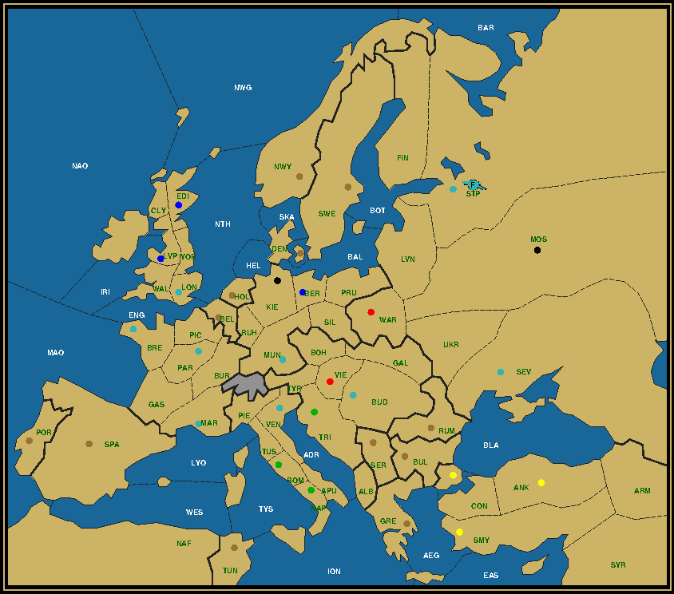
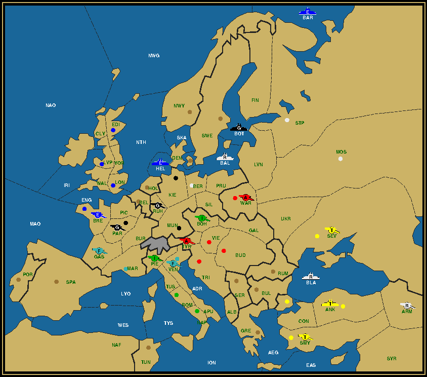
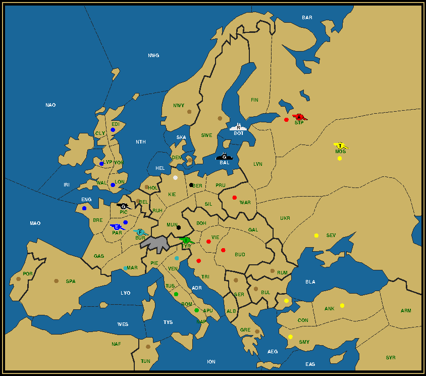
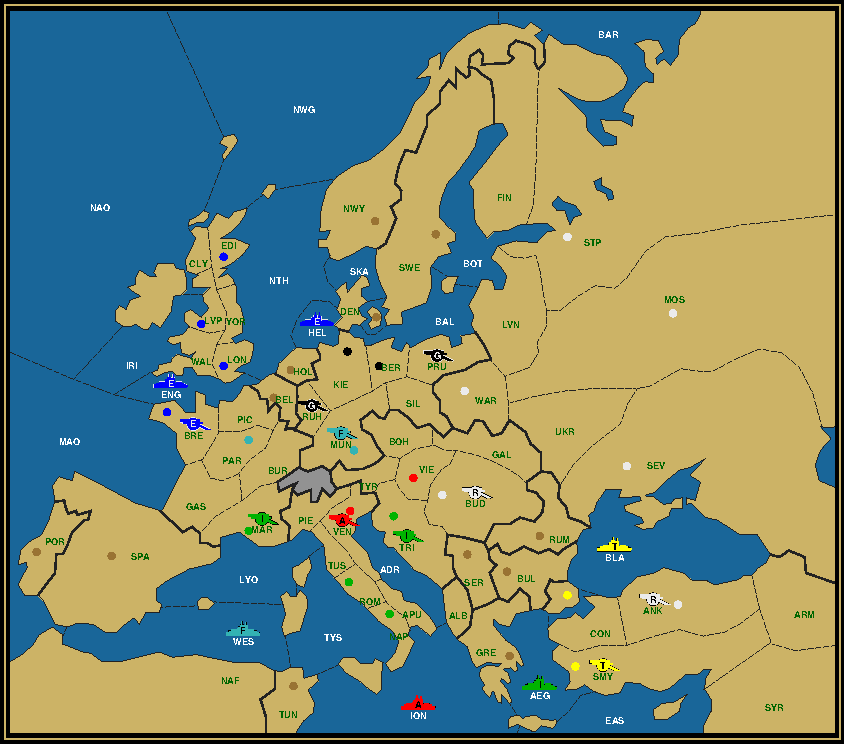
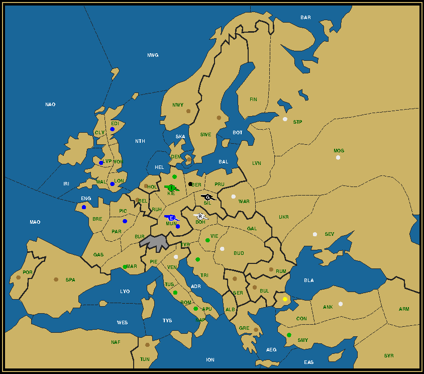

|
Looking ahead
With the Winter season setting in across the Northern hemisphere, with promises of record snowfall in many places due to our ever warming globe (presumably all that melting ice on the Poles is converting itself to snow?), it's pretty appropriate that we move our focus to Russia. Moscow has the distinction of being the only other Great Power capital that enters the final year with just 3 units. The formation is a particular one, with all 3 armies starting on a Russian home center. To reduce this to one is fairly straightforward. Could it have been all 4 home centers? And how did the first 3 years develop?
Austria (0/2) Stp Vie England (1/6) A War / Ber Edi Kie Lon Lvp War France (1/7) A Sev / Bre Bud Mar Mun Par Sev Ven Italy (0/3) Nap Rom Tri Russia (1/1) A Mos / Mos Turkey (0/3) Ank Con Smy For the second puzzle the final destination becomes St. Petersburg, the Tsar's winter capital. I'll take the liberty of letting another unit triumph, otherwise you would accuse me of being a cuckold Anglophile. Fear not, my world view is wider than that. Remember, I'm Belgian. And while we might be extremely friendly to our Muslim brothers (I mean "unfriendly" if we are driving them to extremism as some analysts suggest), we love our French retreats. For Belgians and Muslims alike France is the number one touristic destination, with Paris and the Côte d'Azur (Marseilles) at the top of their list. Which is why for this second puzzle a French army has the honor of relieving the Liverpudlian. But which one? In fact army Liverpool might as well die during the first Winter. But will he? Study the map well, showing the final situation. There's a lot of commonality with the Moscow map, but it's the small differences that are most revealing. N'est-ce pas?  Austria (0/2) Vie War England (0/3) Ber Edi Lvp France (1/9) A Stp / Bre Bud Lon Mar Mun Par Sev Stp Ven Germany (0/2) Kie Mos Italy (0/3) Nap Rom Tri Turkey (0/3) Ank Con SmyArmy Berlin to Berlin Last time I challenged you to guide a German and a Russian army towards Berlin as the Last Man Standing. We will start with Army Berlin.
Remember that A Ber is the first German unit to be removed in the Baron's game, in Winter 1902 after the loss of Paris to A Lvp. To prevent the capture we can move A Lvp to Gascony instead. This means there's one more German unit in play in 1903 and potentially also in 1904. Is this a problem? Not really. Four can still be reduced to one in the final year. Where this unit needs to be in Spring 1904 however requires some careful study. The location of 2 of the 4 units are immediately clear. Munich and Kiel remain English and Turkish respectively, therefore they are occupied by A Lvp and A Con as in the original solution. F Stp is still the remaining sniper, but with 4 units it cannot remain in Livonia or the Gulf of Bothnia, as it must be able to support the first dislodgement in Spring and the second (to Berlin) in Fall. It must therefore already be next to Berlin. Being a fleet this can only be in Prussia or the Baltic Sea. Berlin itself is another option, but as it turns out not a good one, as it would block anyone from entering the city. In Spring one of the raiders must move to Berlin, while the second raider gets dislodged. Since Munich does not border the sea, A Lvp must enter the capital, while A Con is driven from Kiel. This requires F Stp to be in the Baltic Sea and A Ber in Ruh, since neither can be on a center after Fall, given that capturing neutral centers is forbidden. The map thus looks like this:
How do we ensure our two snipers to be where they are supposed to be? Easy enough for F Stp, who only needs to swap with F Kie. Whereas before they simply needed to move out to sea to be ready for the Fall 1902 dislodgement of F Edi and the subsequent Spring 1903 convoy from St. Petersburg to Kiel, they now need to move around each other. This can be accomplished in 2 turns if F Stp first moves to Livonia and F Kie to the Baltic Sea. And we have 3 movement turns (4 for the fleet in the Baltic Sea), so still plenty of time. For A Ber however we need to be more careful. This army already comes into action in Fall 1901 when it attacks A Vie in Bohemia supported by A Ven in Tyrolia. In 1902 it supports twice the unit coming from Venice to Tyrolia, meaning it's still in Bohemia when A Ven moves to Munich in Spring 1903, prohibiting A Ber from reaching the Ruhr. A Ber could move to Munich on the first turn and support A Ven to Bohemia against A Vie. But that would break the chain that was running from Rome to Bohemia that enabled us to reduce the units there to just one, A Rom, in 1902. Or the support could be given the other way around, helping A Vie to Tyrolia against A Ven. But then Italy would have only 2 units left and therefore would not be able to disband F Nap. Come what may, we're stuck with one extra unit to the right of Switzerland that will probably still be there a year later. Let's reconsider our options. Instead of requiring the right side to be reduced to one unit, let's reduce the left side to just A Lvp. That means getting rid of A Par in 1902. As this originally was the last surviving French unit, we'll make sure that A Mar is among the remaining 2 on the right. But A Par was also instrumental in removing F Lon in Fall 1902. To clear that hurdle, we divert F Lon to Kiel, where no less than A Ber will attack and dislodge it, supported by F Stp in the Baltic. That extra sniper unit really proves to be useful.
 1901. Notice how A Rom moves up to Piedmont and A Ven slips through to Bohemia. Luckily we still have F Nap to support A Mar to Venice.
1902. A Mar is now in Tyrolia. Since we have no further use for the second German army, we can just as well let A Ven capture Munich, leading to:
1903, with the 4 remaining pieces all in the correct position.
Click here for the complete solution. The final year. What looked like some deceptively simple variation, turned out to be quite a mindbender, involving over half of the units on the board. And that while the final map only differed in two places (Berlin and Paris) from the original one. Just compare the After Winter 1902 maps of this and the Baron's solution.  On the surface this is the same combination of units as in the original, i.e. a grand total of 8 units, the only pair being German. True. But many of these did not start in the same home centers and are now in different locations. A clear demonstration of the kind of flexibility and creativity needed to solve this sort of puzzles. Army Warsaw to Berlin
The groundwork for this solution was given to me by Graeme Ackland. He attempted to solve the very first version of the puzzle, which was simply to make A Lvp become the Last Man Standing in Berlin with no neutral centers captured and all powers still having a unit going into 1903. How close did he get? Extremely close, as you will notice. As this is not my own solution, let me get off my cathedra and explore the solution as it unfolds itself.
 The first year sets the stage. We see Russia moving on Turkey and Austria, England on France and Germany, and Italy even in three different directions. But the movement of the sniper countries is just as important. Russia loses both its fleets to German and Turkish sharpshooters. France and Austria act like mirror images of each other, both losing 2 centers, but capturing one, and sending their fleet into the Med. The significance of this will become apparent later.
Again France and Austria lose 2 and capture 1. At this rate they will be both out of the race by the end of the third year. Which is exactly what will happen. Notice the location of their last center. Indeed, each took a German home center, leaving Germany with only Berlin. Meanwhile England lost its two fleets, one in Kiel like in the previous puzzle (you see where I got the mustard), one in Picardy by way of a German army coming through Belgium, as if doing a historical reenactment. A War crosses into Italy. More units are destroyed in Turkey, even if the dislodgement of the second Turkish army is overkill, since Turkey loses a second home center anyway. But why wait until Winter? F Bre finally arrives at the scene. 9 units left, all colors still present.
 A War moves again through Austria to reach Germany. You could have expected A Lvp to dislodge A Ven, but that's not happening, because A Ven is the only raider that can reach Kiel. Both Kiel and Munich need to be captured to be able to disband the French and Austrian fleets in the Mediterranean. Two sweepers rounding up units far away from the goal. Rings a bell? Indeed, it's the same principle underpinning the Russian sweep of Turkey in the Baron's game, except that this is happening in 1903, not 1902. As a consequence more units can be killed off. This is actually so powerful that it will be used in many more Last Man Standing puzzles. And we have Graeme to thank for it.
Click here for the complete solution. A Ber, the last remaining sniper, is well positioned in Silesia, a non-center province bordering both Munich and Berlin, to assist A War to victory. A Lvp admiringly lasted until Spring 1904, but has no choice than to give way to A War, as the latter starts out 2 provinces away from the target, Berlin. The open question now is: Can this be improved upon? Can, with some minimal adjustments, A Lvp become LMS while retaining the overall flow of this solution? This might be hard to answer, which is why I challenge you to find out for yourself and formulate a proof, positive or negative. If you have one, please share it with me. The aftergameA typical LMS game ends with a board where one or more powers have been eliminated, a few powers are hanging on with very few centers and the rest having a decent number of centers, if perhaps not all their home centers. The power owning the Last Man Standing could be in either of the latter situations, as demonstrated by the two games above. This might sound like a typical mid-game situation, except for the lack of units and the fact that all neutral centers remain uncaptured. How will it go from here? To answer that I'm going to create for each solved LMS puzzle, starting with ber-ber and war-ber, a game on UKDP that starts where the puzzle ends, in Winter 1904, with a single unit on the board and all remaining powers ready to build. Small powers will be teamed up with big powers in order to create some rough balance. A typical game consists of 3 to 5 players vying for the solo, based on the sum of your team's centers. Most games will be No Press, unless requested otherwise. If there's a puzzle that you particularly liked, or you like the alternative starting position, or you're just as curious as I am about the continuation, sign up. Don't fret if it takes a bit longer for the game to fill up. You're part of a piece of art.
If you wish to e-mail feedback on this article to the author, and clicking on the envelope above does not work for you, feel free to use the "Dear DP..." mail interface. |